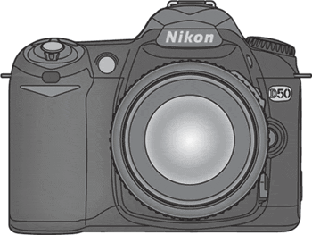

Nikon confirms D50
March 31, 2005 | Comments (0)

Nikon has uploaded the users manual of the new D50. It was found minutes after it was uploaded. The D50 is the new consumer entry camera. It has a 6.1mpix sensor, depth of field preview and 5 auto focus areas. Interestingly is the use of SD cards instead of the Compact Flash which is normally used in DSLR type of camera. The ISO range is from 200 to 1600. The other interesting thing from the manual was the AF-S DX 18–55 mm f/3.5-5.6G ED lens, used in this manual for illustrative purposes.
“The user manual was uploaded in error and we can’t tell you when the official announcement about the D50 will be made,” said Susumu EnomotoSusumu Enomoto — a spokesman for Nikon — noted that the existence of a user manual for the D50 suggests the camera will go on sale in the not-too-distant future… May! May! May! May!
“Those are my principles. If you don't like them I have others.” — Groucho Marx (1895-1977)
Copyright © 2003-2007 Janco Tanis. All rights reserved.
XHTML, CSS, RSS feeds. Powered by Movable Type. Hosted @Home with a domain by hostway.
XHTML, CSS, RSS feeds. Powered by Movable Type. Hosted @Home with a domain by hostway.
Comments
ops... you posted this just while I was writing the same in a comment! :D
Nikon UK press release:
http://www.nikon.co.uk/press_room/pressreleases/143.shtml
First D50 picture???
http://www.dphoto.it/content/view/235/180/
mmmm... I did something wrong in the last comment... I forgot to close tha a tag! Please Janco, can you do something? Well, for those reading this, here is the link:
http://www.dphoto.it/content/view/235/180/
I think it is a fake image!. Look at the "D50" badge. it is not inline with the angle of the camera
Yes, you are right, I noticed that, but the rest of the camera if not real it's a perfect photoshop work, specially the lens! Is the first time I see a fake with a faked lens included... You always see a previous existing lens or only the front of the lens in any faked camera, so this is a very good work... Do you remember any AF-S G Nikkor lens like that? I don't... There is something strange in the lens: those letters and numbers in the front. You can read AF-S DX NIKKOR ED 18-55mm 1:3.5-5.6G and this exactly what you can read in the PDF manual too, but Nikon lenses released in the last years don't have any text in the front, or am I wrong? Well, we will see the answer in three days...
Mmmmm... I bet this is real:
Sorry Janco for my last comment, I tried to directly post a picture using the img tag and since it was working in the comment preview... I forgot it is not included in the allowed html tags!
Anyway, here is the D50 picture:
http://akam.no/images/nikon/speilrefleks/d50/nikon_d50_3.jpg
Here in black:
http://akam.no/images/nikon/speilrefleks/d50/nikon_d50_2.jpg
And here the D70s:
http://akam.no/images/nikon/speilrefleks/d70s/nikon_d70s_2.jpg